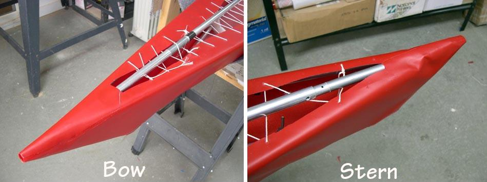

| Sea Otter - R ( PVC Stems) | Menu Last Page Next Page |
|

After turning over the frame, excess material extending past the gunwales is trimmed, overlapped, and glued together to create the bow and stems ends of the deck. The main deck panels are later glued to these section with a 1in (2.54cm) overlap.
Note: - There are two methods for skinning the stems described in the PVC Skinning section of the manual. The Overlap Method as displayed above and the Rub Strip Method. Use the (BACK) key to return. |
|